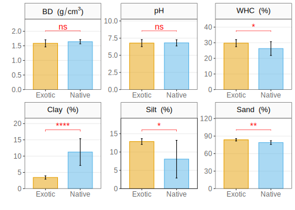
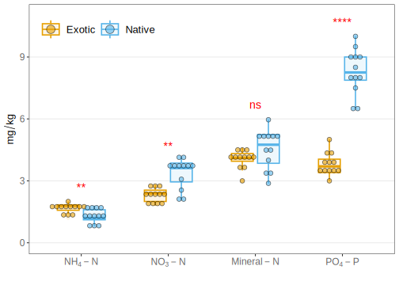
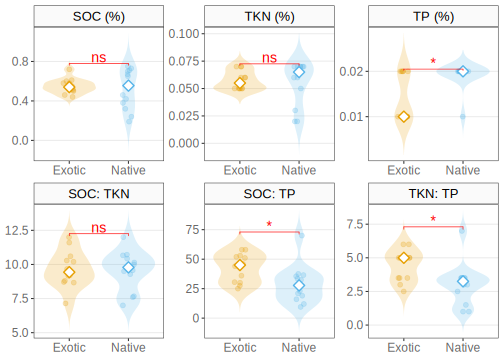
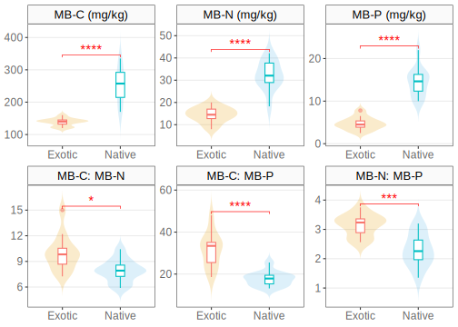
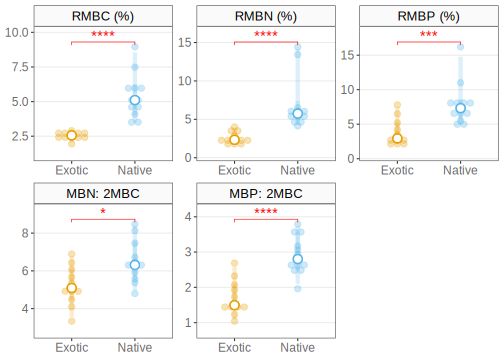
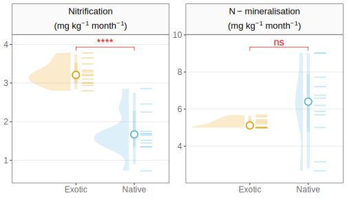
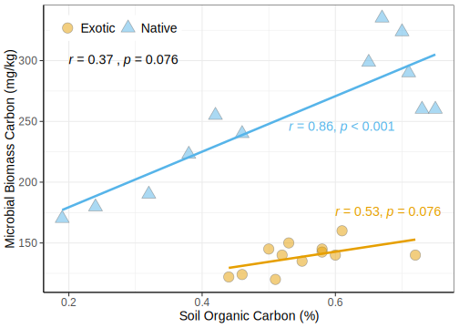
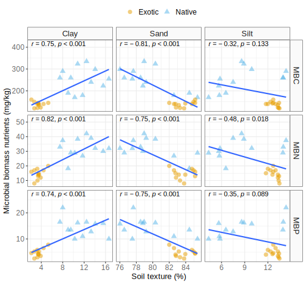
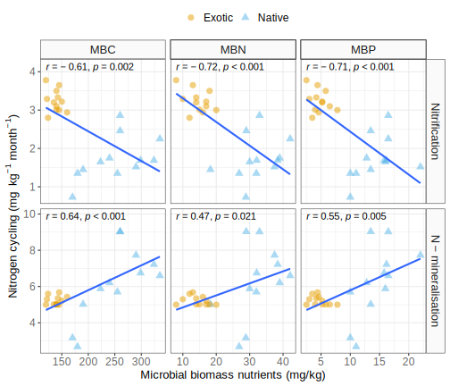
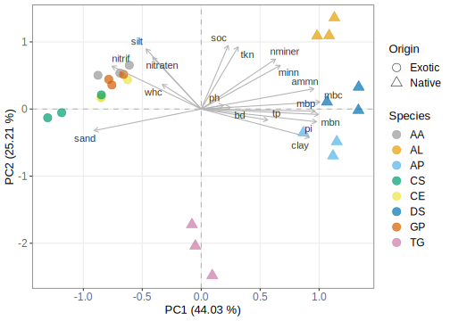

Comparative soil restoration potential of exotic and native woody plantations on coal mine spoil in a dry tropical environment of India: A case study
We compared the soil restoration potential of exotic and native plant species on coal mine. Our results suggested that native species are more beneficial for soil restoration than the exotic species.
![]()
This is the original draft, which may differ from published manuscript. Please refer to https://doi.org/10.1002/ldr.4286
Abstract
Overburden excavated during opencast mining has poorer soil properties due to non-salvage and inversion of soil profiles. One of the negative consequences of opencast coal mining is the production of large amounts of nutrient-poor, infertile, and degraded soils. The soil properties of such overburden restoration of such damaged lands are often improved achieved by planting suitable plant species; however, baseline data for selection and performance of plantation species is lacking the performance of species varies site-to-site. Therefore, this paper aims to test the established evaluated the effects of woody plantations on the physico-chemical and biological properties of coal mine spoil. We synthesized the available data from previous studies conducted on 5-year-plantations in Singrauli coalfields of India. These plantations have monoculture of total eight species, in which four were exotic (Acacia auriculiformis, Casuarina equisetifolia, Cassia siamea and Grevillea pteridifolia) and four were native species (Albizia lebbeck, Albizia procera, Dendrocalamus strictus and Tectona grandis). We compared the soil properties under exotic and native species plantations to evaluate the effect of species origin. Our results showed that the clay content (p < 0.000), ammonium-nitrogen (p < 0.000), inorganic total phosphate (p = 0.009), and microbial biomass nutrients (C, N, and P; p < 0.000) were significantly higher under native plantations than the exotic plantations. Overall, our study suggested that exotic species plantations, either legume or non-leguminous, are not as useful as native species in mine spoil rehabilitation. Thus, native species plantations should be promoted while restoring a coal mine spoil in dry tropical environments.
Keywords: ecological restoration, soil redevelopment, exotic species, native species, coal mine spoil, woody plantations
Introduction
Opencast mining involves excavation and removal of overburden to extract the coal. This removed overburden is dumped aside as large heaps. have poor soil properties due to alterations in soil profile. Since native soils were not salvaged, the surface provides a harsh and heterogeneous media for plant growth. Coal extraction by surface mining (opencast) process drastically alters the mining area’s physical and biological nature (Feng et al. 2019). The leftover coal mine spoil or overburden represent damaged and disrupted ecosystems that are hard to restore into their original state (Berger 1993). The soils of these coal mine spoil heaps are characterized by high bulk density, pH, low nutrients (carbon, nitrogen and phosphorus) and high concentrations of toxic metals (Feng et al. 2019). Such soils have limited capability to support vegetation and natural recovery of vegetation is very slow in such ecosystems. The increased concerns about the negative impacts of mining and land degradation have stimulated scientific community to devise technologies to restore such damaged landscapes. The first step in any restoration program should focus on the protection of disturbed habitat and communities from being further wasted. Then attempt to accelerate the re-vegetation process to increase biodiversity and stabilize nutrient cycling (J. S. Singh, Singh, and Jha 1995; A. N. Singh and Singh 2006; A. N. Singh, Zeng, and Chen 2006). However, the success of a restoration program depends on the quality of planted species, parent material, and environmental conditions (A. N. Singh, Raghubanshi, and Singh 2002). Further, providing good surface material such as mulch or some other plant material is useful for enhancing re-vegetation of degraded sites. Therefore, there is a strong need to evaluate the restoration potentials of different plant species to support the restoration practitioners, engineers and scientific community.
Plantations have been widely employed to restore the damaged and degraded lands. In this context, Fisher (1995) suggested five general hypotheses for the mechanisms that contribute to the amelioration of degraded lands by planting certain desirable species (Fisher 1995). The mechanisms involve: first, an increase in the soil organic matter contents resulting from carbon (C) fixation in photosynthesis and its transfer via leaf litter and root turnover to the soil. Second, some leguminous trees’ nitrogen (N) fixation increases soil N content under the tree canopy. Third, the tree’s rhizospheric effect on soils resulted in enhanced N mineralization and increased microbial biomass. Fourth, microclimate modification by tree canopies that moderate soil and air temperatures and soil moisture regimes. Fifth, nutrient pumping reflects the uptake of nutrients from greater depths by tree roots and accumulation in a smaller surface soil volume due to litterfall.
Soil physicochemical properties are greatly influenced by the plant species growing above the soil due to variations in individual species traits (Waring et al. 2015). The choice of species for restoration of degraded lands remained debatable an area of interest among the scientific community and restoration practitioners. Since exotic and native species are adapted to different local environment, they have differential restoration potential due to variations in functional traits. Exotic plants are recommended for restoration due to their faster growth and biomass production. Further, high disturbance and heterogeneity favors their growth and establishment. However, many researchers pointed out the negative impacts of exotic species on the soil fertility and native flora; therefore suggested to avoid exotic species for restoration program (Cusack and Montagnini 2004; Diemont et al. 2006; Lugo, Wang, and Herbert Bormann 1990). In contrast to this, some researchers argued that exotic species may be especially recommended for primary rehabilitation on bare coal mine spoil due to their fast growth and establishment (DAntonio and Meyerson 2002; Parrotta 1999; Parrotta and Knowles 2001). Thus, evaluation of species’ effects on coal mine soil properties is vital to assess their suitability for the soil reclamation process.
The present study addresses this gap by comparing the soil properties under native and exotic woody species established on coal mine spoils after 5-years from the available data. Researchers did an intensive ecological study during 1993–1996 to investigate each planted species’ overall effect, either native or exotic or legume or non-legumes, on degraded soil of mine spoils (Dutta and Agrawal 2001, 2003; A. N. Singh, Raghubanshi, and Singh 2004b, 2004a; A. N. Singh and Singh 2006, 1999; A. Singh 2001; J. S. Singh, Singh, and Jha 1995). A comparable database between exotic and native species for vegetational and soil components was available only for 5-years-old plantation age. Therefore, in this paper, we compared the restoration efficiency of 5-year-old planted species in both variety (exotic and native) in terms of soil physical properties, total soil nutrients (SOC, TKN, and TP), available nutrients (Mineral N and P), N-mineralization, microbial biomass (MB-C, MB-N, and MB-P) and their nutrients from soil characters in redeveloping soil of mine spoil. We address the following questions from the comparison:
- Which woody species are suitable for coal mine spoil restoration?
- Are exotic and native species differ in their soil restoration potentials?
- Which soil parameters are more affected by origin of species?
- Is there any relationship between soil physicochemical properties under exotic and native plantations?
Methods
Plantations and sample plots
The plantations under study were situated in the west section of Jayant Block, which is located in the northeastern part of Singrauli Coalfield in the district of Sidhi (M. P.) between latitudes 24°6′45″–24°11′15″ N and longitude 82°36′40″–82°41′15″ E. The study area is situated on a plateau above the plain on its southwest side. The average elevation at the foot of the plateau is around 300 m above mean sea level. The climate of the area is tropical monsoonal, and the year is divisible into a mild winter (November–February), a hot summer (April–June), and a warm rainy season (July–September). Data collected at a meteorological station present on the site showed that the mean monthly minimum temperature within the annual cycle ranges from 6–28°C and the mean monthly maximum from 20–40°C. The rainfall annually averages 1069 mm, of which about 90% occurs during late June to early September. The rainfall is characterized by a high degree of inter-annual variation; as during the study period 1980–1996, it ranges from 700 to 1450 mm/yr (A. N. Singh, Raghubanshi, and Singh 2004a).
Experimental design
All the plantations (exotic and native) were raised in July–August by planting nursery-raised seedlings in previously dug pits of 40 × 40 × 40–cm size at a spacing of 2 × 2–m. Plantations of three native species: Albizia lebbeck (L.) Benth., Albizia procera (Roxb.) Benth. and Tectona grandis L.f. and three exotic species: Casuarina equisetifolia L., Cassia siamea Lam. and Grevillea pteridifolia Knight were raised in 1990 by planting seven to eight months old nursery raised seedlings. However, one native (Dendrocalamus strictus (Roxb.) Nees) and one exotic (Acacia auriculiformis A.Cunn. ex Benth.) were raised in 1991 by planting eight months of nursery-raised seedlings. The plantations have been raised for land rehabilitation as natural colonization is prolonged on the mine spoil. All the planted plots were seeded in 1994 at the rate of 6 kg/ha with Dinanath grass (Pennisetum pedicellatum Trin) to prevent soil erosion and loss of runoff nutrients. The total planted area for A. lebbeck, A. procera, C. equisetifolia, and G. pteridifolia was 1.5 ha, each, whereas the same for T. grandis, D. strictus, A. auriculiformis and C. siamea was about 0.5 ha, each. For sampling, three permanent plots were established for each species. The sample plots’ size was 25 × 25–m for A. lebbeck, A. procera, C. equisetifolia and G. pteridifolia, 15 × 15–m for T. grandis and D. strictus and 10 × 10–m for A. auriculiformis and C. siamea. Five individuals of average height and diameter (clumps in D. strictus) were marked in each replicate plot using waterproof paint for various measurements from 1993. The number of individuals (clumps in D. strictus) in each plot was inventoried in February 1993. Data collection was carried out annually in February–March.
Sample collection and analyses
Three soil samples were collected at random from each of the three permanent plots using 15 × 15 × 10–cm monoliths during September 1995 and 1996. Each time, the samples from within a plot were thoroughly mixed to yield one composite sample per plot; this yielded three samples for each plantation on each sampling date. Large plant materials were removed, and the field-moist soil was sieved through a 2-mm mesh screen.
Each soil sample was divided into two parts. One part in the field-moist condition was used to measure available nutrients (NH4-N, NO3-N, and PO4-P) and microbial C, N, and P. Organic C was determined by dichromate oxidation and titration with ferrous ammonium sulfate (Allen, Grimshaw, and Rowland 1986). Kjeldahl N was determined by the micro Kjeldahl method (Jackson 1958), and NH4-N was extracted by 2M KCl and analyzed by the phenate method (APHA 1985). NO3-N was measured by the phenol disulphonic acid method, using CaSO4 as the extractant (Jackson 1958). Bicarbonate extractable Pi was determined by the ammonium molybdate-stannous chloride method (Sparling, Whale, and Ramsay 1985). The soil was digested in a triple acid mixture of HClO4, HNO3, and H2SO4 (1:5:1), and the digest was analyzed for P by a phosphomolybdic acid blue color method (Jackson 1958). Microbial biomass C, N, and P were determined by chloroform fumigation and extraction methods described earlier (A. N. Singh, Raghubanshi, and Singh 2004b, 2004a; A. N. Singh and Singh 1999; Srivastava, Jha, and Singh 1989). Net nitrogen mineralization, nitrification, and ammonification were determined by in situ buried bag incubation method (Eno 1960). All results are expressed on an oven-dry soil (105°C, 24 hr) basis.
Statistical analyses
Firstly, the collected data was analysed to verify the assumptions of parametric tests. The normality of investigated parameters within groups (i.e., species and origin) was tested using the univariate Shapiro-Wilk test. It has better power than the other normality tests and therefore, it is widely recommended for testing normality. Next, we assessed the investigated parameters for homogeneity of variances across the groups. The Levene’s test, which is considered less sensitive to non-normal data, was used to assess the homogeneity of variances across the groups. Shapiro-Wilk test suggested that some variables were not normally distributed in our data. All variables were found to have homogeneous variance across the species, whereas some variables had unequal variances among the origin. The unequal variances among the origin can be compensated by moderate sample size (n = 12).
Since some variables in data violated the assumptions of parametric tests, we chosen the non-parametric Kruskal-Wallis test to observe the effects of plantation species on spoil physicochemical parameters. The Kruskal-Wallis test is a rank-based test, which compares the mean ranks (medians) among the groups regardless of distribution of data. Next, we used the Dunn’s post-hoc test to discriminate the differences among the species for each investigated parameter. Dunn’s test has two advantages over pairwise Wilcoxon’s test: firstly, it retains the ranks produced Kruskal-Wallis test and, secondly, it also incorporates the pooled variance estimate implied by the null hypothesis of the Kruskal-Wallis test. The p-values computed by Dunn’s test were adjusted to control the family-wise error rate for multiple comparisons. These adjustments were made using the stepwise Holm method (also called Holm-Bonferroni adjustment), which is considered less conservative and more powerful than the Bonferroni method. We used the Wilcoxon’s rank sum test (also known as Mann-Whitney U test) to compare the variables between exotic and native species plantations. This test compares the difference in medians with relaxed assumption of normality of data. Across all the computed p-values, we considered p < 0.05 as significant.
Principal Component Analysis (PCA) with scaling 2 was used to observe the correlations and patterns in the soil properties. Since the soil properties are expressed in different measurement units, we computed PCA from a correlation matrix as correlations are the covariances of standardized variables (Borcard, Gillet, and Legendre 2018). Pearson’s correlation coefficient was determined at 0.05 significance level to establish the relationships among soil properties.
All statistical analyses were performed in R language and statistical environment version 4.1.0 (R Core Team 2021). The rstatix (Kassambara 2021) and ggpubr (Kassambara 2020) packages were used for implementing all statistical tests and correlations. The R package tidyverse was used for data preparation and visualizations (Wickham et al. 2019) and package vegan was used for PCA (Oksanen et al. 2020).
Results
Effect of plantations on spoil physicochemical properties
The primary aim of this paper was to investigate the effects of species and origin on coal mine spoil restoration. Among the spoil physical properties, soil texture parameters (clay, silt and sand content) was significantly differed due to species (Table 1). However, bulk density, pH and water holding capacity were found similar under all species plantations (Table 1).
| Parameters | H (7) | p | η2 |
|---|---|---|---|
| Physical properties | |||
Bulk density (g/cm3) |
3.644 | 0.820 | −0.210 |
pH |
9.725 | 0.205 | 0.170 |
Soil texture: Clay (%) |
21.686 | 0.003 | 0.918 |
Soil texture: Sand (%) |
18.987 | 0.008 | 0.749 |
Soil texture: Silt (%) |
21.202 | 0.003 | 0.888 |
Water holding capacity (%) |
13.649 | 0.058 | 0.416 |
| Available nutrients | |||
Ammonium-N (mg/kg) |
18.276 | 0.011 | 0.705 |
Mineral-N (mg/kg) |
19.064 | 0.008 | 0.754 |
Nitrate-N (mg/kg) |
17.305 | 0.015 | 0.644 |
Phosphate-P (mg/kg) |
19.244 | 0.007 | 0.765 |
| Total soil nutrients | |||
SOC: TKN |
10.858 | 0.145 | 0.241 |
SOC: TP |
14.103 | 0.049 | 0.444 |
Soil organic carbon (SOC) (%) |
20.424 | 0.005 | 0.839 |
TKN: TP |
14.633 | 0.041 | 0.477 |
Total Kjeldahl nitrogen (TKN) (%) |
18.738 | 0.009 | 0.734 |
Total phosphorus (TP) (%) |
11.500 | 0.118 | 0.281 |
| Microbial biomass nutrients | |||
MBC: MBN |
13.000 | 0.072 | 0.375 |
MBC: MBP |
18.947 | 0.008 | 0.747 |
MBN: MBP |
17.058 | 0.017 | 0.629 |
Microbial biomass carbon (MBC) (mg/kg) |
21.961 | 0.003 | 0.935 |
Microbial biomass nitrogen (MBN) (mg/kg) |
21.175 | 0.004 | 0.886 |
Microbial biomass phosphorus (MBP) (mg/kg) |
21.517 | 0.003 | 0.907 |
| Relative microbial biomass nutreints | |||
MBC: SOC |
19.947 | 0.006 | 0.809 |
MBN: 2MBC |
13.000 | 0.072 | 0.375 |
MBN: TKN |
20.572 | 0.004 | 0.848 |
MBP: 2MBC |
18.947 | 0.008 | 0.747 |
MBP: TP |
17.366 | 0.015 | 0.648 |
| Nitrogen cycling | |||
N-mineralization rate (mg kg-1 month-1) |
19.862 | 0.006 | 0.804 |
Nitrification rate (mg kg-1 month-1) |
18.946 | 0.008 | 0.747 |
The present study found that coal mine spoil had almost similar bulk density and neutral pH under both native and exotic plantations (Table 1 & Figure 1).
| Species | BD (g/cm3) | pH | WHC (%) | Soil texture | ||
|---|---|---|---|---|---|---|
| Clay (%) | Silt (%) | Sand (%) | ||||
| Exotic | ||||||
Acacia auriculiformis |
1.61a |
6.5a |
27.87a |
3.45ab |
12.6ab |
83.95a |
Cassia siamea |
1.53a |
6.98a |
28.52a |
3.29ab |
13.4ab |
83.31a |
Casuarina equisetifolia |
1.59a |
6.67a |
30.54a |
2.7b |
12.35ab |
84.95a |
Grevillea pteridifolia |
1.56a |
6.79a |
30.46a |
4.42ab |
13ab |
82.58a |
| Native | ||||||
Albizia lebbeck |
1.6a |
6.63a |
24.48a |
8ab |
14a |
77.64a |
Albizia procera |
1.64a |
7.29a |
29.33a |
15.56a |
5.8b |
78.8a |
Dendrocalamus strictus |
1.67a |
6.92a |
25.42a |
12.45ab |
8.89ab |
78.95a |
Tectona grandis |
1.62a |
6.6a |
25.81a |
10.25ab |
5.72b |
84.44a |
| Data for exotic species obtained from Dutta and Agrawal (2003) and Singh et al. (1995) | ||||||
| Values are medians of three replicates | ||||||
| Within the columns, values followed by the same letter are not significantly different at p < 0.05, using the Dunn's post-hoc test | ||||||
| BD = Bulk density, WHC = Water holding capacity | ||||||
However, spoil water holding capacity was found significantly higher under exotic plantations than the native plantations (Figure 1).

****, ***, **. *, and ns, respectivelySimilarly, it appeared that silt and sand was significantly higher spoil under exotic plantations as compared to native plantations. But the clay content showed opposite pattern and was found to be significantly higher under native plantations than the exotic plantations. However, ANOVA showed non-significant differences due to species’ effect except soil texture (Tables Table 1 & Table 2).
Available nutrients such as ammonium-N (NH4-N), nitrate-N (NO3-N), mineral-N (NH4-N + NO3-N) and inorganic-P (PO4-P) content indicated significant differences due to species (Table 1 & Table 3).
| Species |
NH4-N (mg/kg) |
Mineral-N (mg/kg) |
NO3-N (mg/kg) |
PO4-P (mg/kg) |
|---|---|---|---|---|
| Exotic | ||||
Acacia auriculiformis |
2.5a |
4.4ab |
1.8ab |
3.6a |
Cassia siamea |
2a |
3.5ab |
1.5ab |
3.4a |
Casuarina equisetifolia |
2.4a |
4ab |
1.6ab |
4.2a |
Grevillea pteridifolia |
2.4a |
4.3ab |
1.9a |
4a |
| Native | ||||
Albizia lebbeck |
3.64a |
5.24a |
1.6ab |
9a |
Albizia procera |
3.86a |
5.06ab |
1.2ab |
8.5a |
Dendrocalamus strictus |
3.6a |
4.5ab |
1.2ab |
9a |
Tectona grandis |
2.15a |
3.35b |
0.85b |
7.5a |
| Data for exotic species obtained from Dutta and Agrawal (2003) and Singh et al. (1995) | ||||
| Values are medians of three replicates | ||||
| Within the columns, values followed by the same letter are not significantly different at p < 0.05, using the Dunn's post-hoc test | ||||
A comparison between exotic and native species plantations revealed that NH4-N was significantly higher whereas NO3-N was significantly lower under native plantations as compared to exotic plantations (Figure 2). Since mineral-N is the sum of NH4-N and NO3-N, no significant differences were observed for mineral-N under exotic and native species plantations (Figure 2). However, inorganic phosphorus (PO4-P) was found significantly higher under native plantations than the exotic plantations (Figure 2).

****, ***, **. * and ns, respectivelyThe concentration of total soil nutrients (C, N, and P) was also significantly varied due to species as indicated by ANOVA (Table 1 & Table 4).
| Species | SOC (%) | TKN (%) | TP (%) | SOC: TKN | SOC: TP | TKN: TP |
|---|---|---|---|---|---|---|
| Exotic | ||||||
Acacia auriculiformis |
0.58ab |
0.07ab |
0.02a |
9.67a |
36a |
3.5a |
Cassia siamea |
0.46ab |
0.05ab |
0.01a |
9.2a |
46a |
5a |
Casuarina equisetifolia |
0.6ab |
0.05ab |
0.02a |
10.6a |
30.5a |
3.5a |
Grevillea pteridifolia |
0.55ab |
0.06ab |
0.01a |
9.17a |
52a |
5a |
| Native | ||||||
Albizia lebbeck |
0.73a |
0.07a |
0.02a |
10.43a |
36.5a |
3.5a |
Albizia procera |
0.42ab |
0.06ab |
0.02a |
7.6a |
21a |
3a |
Dendrocalamus strictus |
0.67ab |
0.07a |
0.02a |
9.57a |
33.5a |
3.5a |
Tectona grandis |
0.24b |
0.02b |
0.02a |
10.67a |
12a |
1a |
| Data for exotic species obtained from Dutta and Agrawal (2003) and Singh et al. (1995) | ||||||
| Values are medians of three replicates | ||||||
| Within the columns, values followed by the same letter are not significantly different at p < 0.05, using the Dunn's post-hoc test | ||||||
| SOC = Soil organic carbon, TKN = Total Kjeldahl nitrogen, TP = Total phosphorus | ||||||
The maximum concentration for soil organic carbon (SOC) and total kjeldahl nitrogen (TKN) was found in Albizia lebbeck (a native species) followed by Dendrocalamus strictus (Table 4). Although native plantations (A. lebbeck, A. procera and D. strictus), except T. grandis plantation, showed a higher SOC and TKN than exotic plantations, these differences were not found to be statistically significant. The comparison between exotic and native plantations indicated that differences in SOC, TKN and their ratio (SOC: TKN) were non-significant, whereas. total Total phosphorus (TP) was significantly lower, and whereas SOC:TP and TKN:TP ratio were significantly higher under exotic plantations than the native plantations after 5-years of establishment (Figure 3).

****, ***, **. *, and ns, respectivelyIn this study, soil microbial biomass carbon (MB-C), microbial biomass nitrogen (MB-N), and microbial biomass phosphorus (MB-P) were found to be significantly varied due to the effect of species (Table 5). This was evident from the results of ANOVA which showed highly significant differences in MB-C, MB-N, MB-P, and their ratios due to species (Table 1).
| Species | MBC (mg/kg) | MBN (mg/kg) | MBP (mg/kg) | MBC: MBN | MBC: MBP | MBN: MBP |
|---|---|---|---|---|---|---|
| Exotic | ||||||
Acacia auriculiformis |
142.5ab |
14ab |
4.2ab |
10.18a |
33.93ab |
3.33a |
Cassia siamea |
122b |
10a |
3b |
12.2a |
40.67b |
3.33a |
Casuarina equisetifolia |
150ab |
17ab |
5.2ab |
8.82a |
28.85ab |
3.27a |
Grevillea pteridifolia |
140ab |
17ab |
6.5ab |
8.24a |
21.54ab |
2.62a |
| Native | ||||||
Albizia lebbeck |
260a |
32.96ab |
16.5a |
7.89a |
15.76a |
2a |
Albizia procera |
240ab |
32ab |
12.8ab |
7.43a |
18.75ab |
3.05a |
Dendrocalamus strictus |
323.74a |
38.4b |
16.2a |
8.43a |
19.98ab |
2.37a |
Tectona grandis |
179.67ab |
26.85ab |
11ab |
6.69a |
16.33a |
2.44a |
| Data for exotic species obtained from Dutta and Agrawal (2003) and Singh et al. (1995) | ||||||
| Values are medians of three replicates | ||||||
| Within the columns, values followed by the same letter are not significantly different at p < 0.05, using the Dunn's post-hoc test | ||||||
| MBC = Microbial biomass carbon, MBN = Microbial biomass nitrogen, MBP = Microbial biomass phosphorus | ||||||
Further, all the microbial biomass nutrients analysed in this study were found to be significantly higher under native plantations as compared to exotic plantations after 5-years of their establishment (Figure 4). As a result the ratios of microbial biomass nutrients were also found to be significantly varied among exotic and native species and MB-C:MB-N, MB-C:MB-P, and MB-N:MB-P are found to be significantly lower in native species as compared to the exotic species (Figure 4).

****, ***, **. * and ns, respectivelyWhen we analysed the microbial biomass nutrients as the fraction of total soil nutrients, we found similar results. The proportional microbial biomass nutrients were also found to be significantly varied due to the effect of species (Table 2). The microbial biomass carbon (MB-C) accounted for 3.73–7.49% under native and 2.43–2.61% under exotic plantations of the total soil organic carbon (SOC) in the respective plantations. Similarly, the microbial biomass nitrogen (MB-N) was 4.76–10.84% under native plantations and 2.12–3.02% of total Kjeldahl nitrogen (TKN) was in the exotic plantations (Table 6).
| Species | RMBC (%) | RMBN (%) | RMBP (%) | MBN: 2MBC | MBP: 2MBC |
|---|---|---|---|---|---|
| Exotic | |||||
Acacia auriculiformis |
2.46a |
2.14a |
2.2a |
4.91a |
1.47ab |
Cassia siamea |
2.7a |
2a |
3a |
4.1a |
1.23b |
Casuarina equisetifolia |
2.62a |
3.4ab |
2.9a |
5.67a |
1.73ab |
Grevillea pteridifolia |
2.5a |
2.83ab |
6.5a |
6.07a |
2.32ab |
| Native | |||||
Albizia lebbeck |
3.56a |
4.71ab |
8.25a |
6.34a |
3.17a |
Albizia procera |
5.87a |
6ab |
6.4a |
6.73a |
2.67ab |
Dendrocalamus strictus |
4.62a |
5.49ab |
8.25a |
5.93a |
2.5ab |
Tectona grandis |
7.49a |
13.43b |
5.5a |
7.47a |
3.06a |
| Data for exotic species obtained from Dutta and Agrawal (2003) and Singh et al. (1995) | |||||
| Values are medians of three replicates | |||||
| Within the columns, values followed by the same letter are not significantly different at p < 0.05, using the Dunn's post-hoc test | |||||
| RMBC = Relative microbial biomass carbon, RMBN = Relative microbial biomass nitrogen, RMBP = Relative microbial biomass phosphorus | |||||
The comparison between exotic and native species suggested that the relative proportion of microbial nutrients to the total soil nutrients was higher under native plantations than the exotic plantations (Figure 5).

****, ***, **. * and ns, respectively.The estimated nitrification and nitrogen mineralization rates indicated significant variations due to species (Table 1).
| Species | Nitrification rate (mg kg-1 month-1) |
N-mineralization rate (mg kg-1 month-1) |
|---|---|---|
| Exotic | ||
Acacia auriculiformis |
3.33a |
5.35ab |
Cassia siamea |
3.29a |
5.3ab |
Casuarina equisetifolia |
3.22a |
5.22ab |
Grevillea pteridifolia |
3.1a |
5.01ab |
| Native | ||
Albizia lebbeck |
2.46a |
9.02a |
Albizia procera |
1.65a |
5.88ab |
Dendrocalamus strictus |
1.69a |
6.75ab |
Tectona grandis |
1.35a |
3.17b |
| Data for exotic species obtained from Dutta and Agrawal (2003) and Singh et al. (1995) | ||
| Values are medians of three replicates | ||
| Within the columns, values followed by the same letter are not significantly different at p < 0.05, using the Dunn's post-hoc test | ||
Nitrification rates were found significantly higher under exotic plantations as compared to native plantations (Figure 6). But no significant differences were observed for nitrogen mineralization rates under exotic and native plantations (Figure 6). However, it showed high variability under native plantations (3.62–8.59 mg kg-1 month-1) as compared to exotic plantations (5.01–5.35 mg kg-1 month-1).

****, ***, **, * and ns, respectivelyInter-relationship in soil vegetation redevelopment under exotic and native plantations
This study found a non-significant positive relationship between microbial biomass carbon and soil organic carbon (Figure 7). However, this relationship was significant under native species plantations but non-significant under exotic plantations (Figure 7).

Further, microbial biomass nutrients were found to be associated with soil texture. All the microbial biomass nutrients exhibited a significant positive relationship with soil clay content and a significant negative relationship with soil sand content (Figure 8). Although the soil silt content was showed a non-significant negative association with microbial biomass carbon and microbial biomass phosphorus, it displayed a significant negative relation with microbial biomass nitrogen (Figure 8). However, most of these relationships were not found to be significant under exotic and native plantations, when analysed separately.

Similarly, the nitrification rates were significantly negatively associated whereas the nitrogen mineralization rates were significantly positively associated with microbial biomass nutrients (Figure 9). However, these relationships were also not found to be significant under exotic and native plantations, when analysed separately.

Principal Component Analysis (PCA) correlation biplot suggests that some soil properties can be grouped on the basis of their strong associations. The first two principal axes explained about 70% of total variation in the data (Figure 10). The soil sand content is negatively correlated with ammonium nitrogen, soil organic carbon (soc) and microbial biomass nutrients (mbc, mbn, mbp) whereas positively correlated with nitrification rates. Similarly, the silt content is positively associated with nitrate-nitrogen, nitrification rates and soil organic carbon, whereas it was negatively associated with clay content, inorganic phosphorus (PO4-P) and microbial biomass nitrogen. Thus, the PCA correlation biplot also supports the above derived relationships of soil texture with microbial biomass nutrients and nitrogen cycling, in addition to the relation of SOC and MBC.

Discussion
Soil physico-chemical properties under exotic and native plantations
Fresh mine spoils are characterized by neutral pH, high bulk density, low water holding capacity (WHC), and deficiency of soil nutrients (A. N. Singh, Raghubanshi, and Singh 2004b). However, the older mine spoils have relatively better physical properties as compared to fresh spoils. Soil physical properties are distinctly better in the natural forests as compared to the mine spoil, suggesting that plantations improve soil physical properties (K. P. Singh and Mishra 1979). The present study found that the bulk density and pH were similar under both plantations indicating that both types of plantations have similar effects on bulk density and pH. Further, it might be possible a time frame of just five years might be insufficient to observe effects on bulk density and pH. The higher clay content under native species suggests that the roots of these species might have released some acidic substances, which caused chemical withering. Among native species, A. procera and A. lebbeck are most suitable for soil restoration (A. N. Singh, Raghubanshi, and Singh 2004a).
Soil nutrients are usually associated with litterfall and litter decomposition rates, since litter is a major source of soil nutrients in terrestrial ecosystems. A recent comparison of 5-year-old exotic and native plantations on coal mine spoil suggested that native plantations have more litterfall and decomposition rates as compared to exotic plantations, though the differences were non-significant (A. N. Singh and Kumar 2022). Ammonification is the process of formation of organic nitrogen from the decomposition of organic matter including plant litter. The higher NH4-N under native plantations suggests a higher ammonification rate, which might be associated with relatively higher litterfall and faster decomposition rates under native plantations as compared to exotic plantations. Further, it also indicates that ammonifying bacteria might have developed and colonized faster under native plantations than the exotic plantations. On the other hand, the higher NH4-N and lower NO3-N under native species suggests a lower nitrification rate, which in turn indicate low abundance and activity of nitrifying bacteria (Isobe et al. 2020). Lower nitrification rates as compared to higher ammonification rates might be the consequence of underlying microbial diversity since the latter involves highly diverse microbes (Isobe et al. 2020). Further, the activity of nitrifiers is sensitive to water availability, drier conditions of the coal mine spoils might have restricted the nitrification rates (Isobe et al. 2020). Furthermore, it may also be possible that available NO3-N might be readily absorbed by the plants resulting in low net NO3-N under the native plantations. Similarly, inorganic phosphate under native plantations again suggests development of microbes including mycorrhizal fungi.
Although the total soil organic carbon (SOC) and total kjeldahl nitrogen (TKN) were similar under both plantations, total phosphorus content was better under native plantations than the exotic plantations. Among native species, Albizia lebbeck and Dendrocalamus strictus seemed to be suitable to raise the C and N capital in the redevelopment soil of mine spoil (A. N. Singh, Zeng, and Chen 2006). However, these concentrations were considerably lower than those in natural deciduous forests (organic C = 0.47–2.1%, total N = 0.05–0.16%) (L. Singh and Singh 1993). The carbon to nitrogen ratio (C:N ratio) determines the mineralization and immobilization of nutrients from the organic matter. A lower C:N ratio favors mineralization whereas a higher C:N ratio favors immobilization. The soil C:N ratio was close to 10:1 in the present study suggests faster mineralization to release nutrients. This ratio was slightly lower under native plantation (9.5:1) than the exotic plantation (9.8:1).
The nutrients in organic matter are first immobilized by the microbes in the form of microbial biomass. When these microbes die, the nutrients are released back to the soil through mineralization (J. S. Singh et al. 1989). Thus, higher microbial biomass nutrients are preferred for redevelopment and restoration of degraded soils because it aids in re-establishment of nutrient cycle (Srivastava, Jha, and Singh 1989). Therefore, the present study advocates the suitability of native species for recovery of nutrient cycling as the microbial biomass nutrients (C, N and P) were significantly higher native plantations as compared to exotic plantations. Further, the lower microbial biomass C:N ratio under native plantations suggests faster mineralization rates under these plantations as compared to exotic plantations. Moreover, microbes consumed a higher fraction of total soil nutrients under native plantations as indicated by higher values of microbial biomass nutrients to the total soil nutrients, which is considered as a measure of the success of reclamation efforts (Insam and Domsch 1988; Izquierdo et al. 2005). This higher nutrient immobilization rates under native plantations again favors native species plantations for re-establishment of nutrient cycling and rehabilitation of mine spoil.
Relationships of soil physico-chemical properties
The relationships between soil organic matter, microbial biomass, and microbial activity have been proposed as soil maturity indicators (Insam and Domsch 1988). A positive linear relationship between soil organic carbon and microbial biomass carbon indicates that the two parameters mirror each other during the early soil redevelopment period. However, the relationship was stronger and more significant under native plantations as compared to the exotic plantations. This positive association suggests that increased input of organic carbon might reduce competition among heterotrophic microbes resulting in higher microbial biomass carbon. Thus, higher availability of energy substrate might have increased their assimilation and growth rates.
Soil texture can influence the soil processes through effects on microbes, surface area, porosity and water availability. The amount and type of clay in a soil can affect mineralization rates as coarse-textured soils low in clay tend to increase the rate, and as the soil clay content increases, the rate decreases. A very strong positive correlation among the microbial biomass nutrients (C, N, P) suggests that these are associated with each other i.e., carbon acquisition is also accompanied by acquisition of nitrogen and phosphorus by the microbes.
Considering all together, all the species substantially differed in their soil restoration potential possibly due to individual species traits. All native species performed much better than the exotic species in improving soil physicochemical properties of coal mine spoil. Among native species, A. lebbeck can be considered as the most suitable species for degraded soil which is advocated by earlier studies (A. N. Singh, Raghubanshi, and Singh 2004b, 2004a). However, the soil restoration potential of T. grandis was relatively lower than other native species but still better than exotic species. This might be due to slow growth rates and low amount of litterfall under these plantations. However, T. grandis species cannot be ignored due to its high economic importance and higher rates of biodiversity development under plantations of this species as compared to other native species (Kumar et al. 2020). Thus, all the species can be broadly divided into three groups (i) all exotic species, (ii) T. grandis, and (iii) native species excluding T. grandis in order of better soil restoration potential in terms of soil physicochemical properties such as soil texture, soil nutrients and nutrient cycling.
Conclusions
The present study suggested that exotic and native species differ in their soil restoration potential of coal mine spoil. Native species are clearly more effective for soil redevelopment and restoration than the exotic species irrespective of their leguminous or non-leguminous nature. Soil physicochemical properties such as clay content, available soil nutrients and fertility can be substantially improved by planting more native species than the exotic species. Thus, an optimal combination of plantation species with highest soil-building capacities should be planted on coal mine spoils.native species have satisfactory performance in the restoration of coal mine habitat rather than by exotic species. However, more comparative knowledge on the species-specific effects on ecosystem restoration is still required. The increased understanding about soil properties relationships will be beneficial to restoration practitioners for assessing the soil quality. Our study provided the evidence for positive relationship of microbial biomass carbon and soil organic carbon. Also, the positive association of microbial biomass nutrients with clay content and nitrogen mineralization rates were supported by our data. Thus, soil clay content can be used as an indicator for soil quality during ecological restoration.
Acknowledgements
Authors are grateful to the Chairperson, Department of Botany, Panjab University, Chandigarh as well as the Chairperson, Department of Botany, Banaras Hindu University, Varanasi for providing all necessary facilities required for the work. The authors are also deeply thankful to Prof. J. S. Singh for his constructive guidelines and supervision during the study. University Grants Commission, Government of India is acknowledged for financial assistance in GATE fellowship to ANS and Junior Research Fellowship to AK.
References
Citation
@article{narainsingh2022,
author = {Anand Narain Singh and Abhishek Kumar},
editor = {},
title = {Comparative Soil Restoration Potential of Exotic and Native
Woody Plantations on Coal Mine Spoil in a Dry Tropical Environment
of {India:} {A} Case Study},
journal = {Land Degradation \& Development},
volume = {33},
number = {12},
pages = {1971-1984},
date = {2022-02-11},
doi = {10.1002/ldr.4286},
langid = {en}
}